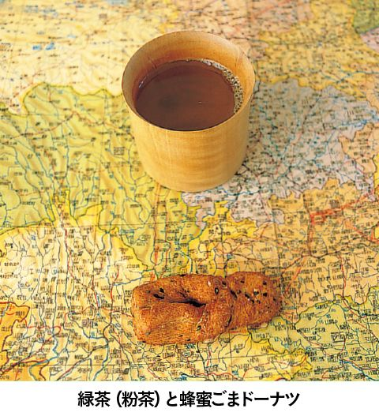

| 迷宮レストラン 第１巻 | |
| 河合 真理 | |
| (2006) | |
ＮＨＫ出版
迷宮レストラン 第１巻
河合真理
このレストランのコンセプトは、事前にお迎えする方の情報を収集した上で、毎回、ただ一人のお客様のために、お好みに合わせた料理をご用意することです。
食材については、それぞれの時代、土地に存在していると思われるものの中から選び、調理道具に関しても可能なかぎり実在していたものに近づけて使用することを前提にして、すべてのレシピを作っています。
なかには個々の時代や土地に実在するレシピをそのままに再現しているものもありますが、ほとんどの料理は、資料から得られた情報を参考に、シェフが考案創造したレシピですので、その点はご了承ください。
あるとき私は、子供のころから憧れていた人物、スペインの建築家ガウディの伝記を読んでいて、彼が何を食べていたのだろうと気になりはじめました。そして、資料を集めて調べているうちに、あっという間に夢中になってしまいました。
誰にとっても、食べるということはごく日常的に行われている行為です。それゆえ、食事に対する考え方は、その人の生まれ育った環境や、人生観が無意識に映し出されていくものだと思うのです。
例えば、ナポレオン１世。眠る時間さえ惜しんだ彼にとって、食事もまた出来れば省略してしまいたい通過儀礼の一つに過ぎなかったのではないでしょうか。また、レオナルド・ダ・ヴィンチは自身の思想や美学に従って、健康的でバランスのとれた理想的な食生活を実現していました。先にあげたアントニ・ガウディにとっては、退廃に誘うすべての欲望を回避し、ストイックに自己実現をしていくための要素の一つとして食があったのかもしれません。ダーウィンにとっては学びの場として好奇心を満たしてくれるものであり、ファーブルにとっては、洗練された楽しみの場であったように思います。
資料を読みあさるにつれて、私の中で彼らの姿が現実味を帯びていくようになり、それに伴い、「この素材をこう料理したら、この人は喜んでくれるかもしれない」「こんな料理を食べてくれたら、もう少し体調がよくなったかもしれない」などと考えるようになっていました。資料にある未知の食材や調理法にふれてみたいという気持ちも手伝って、具体的なレシピが次々と頭に浮かぶようになってきたのです。
そんなことから、今回、この迷宮レストランを開店する運びとなりました。
さて、ただいまから、迷宮レストランがオープンいたします。お料理とともに、時空の旅をごゆっくりお楽しみください。
迷宮レストラン・オーナーシェフ 河合 真理
 まえがきに代えて
まえがきに代えてデザイン 中嶋香織
イラスト 古屋亜見子
撮影 長嶺輝明
スタイリスト 西村千寿
校正 井口泰子
この本のレシピで使用している計量カップはカップ１＝２００㎖、計量スプーンは大さじ１＝15㎖、小さじ１＝５㎖です。
古代エジプト女王の食卓
クレオパトラが治めていたプトレマイオス王朝の首都アレクサンドリアは地中海交易の拠点であり、周辺諸国から様々な食材が集まっていました。ハーブやスパイスはいうまでもなく、フラミンゴの舌やヤマネ、豚の乳房等といった、今日ではお目にかかれないような珍味にも事欠かなかったようです。
また、クレオパトラに前後して、地中海文化を共有していたローマでは、帝国の繁栄に付随してガストロノミー（美食主義）が開花しています。私たちにもその名に聞き覚えのある大貴族アピキウスやアテナイオスといった食通が登場し、彼らは食にまつわる様々な著作を残しています。そのお陰で私たちは当時のレシピをうかがい知ることができます。
ローマ時代の料理で、私が最も興味を引かれたものは「カレイと平目のフォアグラ」なるものでした。具体的なレシピは見つけられませんでしたが、アピキウスの著作の中に「鱒に無理矢理ワインといちじくを食べさせ肝臓を肥大させて食べる」という一節がありました。当時の人々の食に対する並外れた貪欲さがうかがわれ、魚たちもさぞかしつらかったのではと同情してしまいます。
さて、レシピに見られる味付けの傾向としては、香りの強いハーブやスパイスを複合的に合わせ、卵黄や蜂蜜などを加えるといった甘く濃厚で複雑な香りのするものが大半を占めています。
かなり頻繁に使われていて、私たちにあまりなじみのないハーブ類としては、ヘンルーダというミカン科の植物やラビッジというセリ科の植物があげられます。また、調味料としては、鰯などの塩漬けからつくった「ガルム」という魚醤、デフルートムと呼ばれる葡萄の果汁を煮詰めた甘味料があります。これらは、当時の料理には欠かせない素材だったようです。
また、支配者階級にはうつぼ（あの怖い顔の）、うなぎ、穴子などのシーフードが好まれていました。「うつぼは人間をエサとして食べさせたものが最も美味」などという記載もあり、ここまでくるともうお手上げといったところです。

｜シェフによるメニュー説明｜
飲み物──赤ワインの薔薇水割り
ワインは水で薄め、ハーブで香り付けしたり、蜂蜜を入れるなどして、供されるのが一般的でした。本日は赤ワインを薔薇水で薄め、少しの蜂蜜と葡萄汁を加えたものを用意しました。
前菜──灰ゆで卵松の実のソース、フォアグラのペースト添え
紀元前のローマにおいて、コース料理の前菜として、最もポピュラーに使われていた灰ゆで卵を前菜にしました。ソースは、一晩水につけて戻した松の実のペーストに、ガルム、ビネガー、蜂蜜、胡椒を加えたものに、クレオパトラの好物であるフォアグラのソテーとエジプト名産のたまねぎのみじん切りを合わせてペーストとして添え、特別メニューとして用意しました。
灰ゆで卵 松の実のソース、フォアグラのペースト添え
◎灰ゆで卵
熱い灰の中に生卵を殻ごと埋め、蒸し焼きにしてゆでる。
◎松の実のソース
材料（作りやすい分量）
松の実30ｇ、ラビッジ小さじ （フェネグリークで代用）、蜂蜜小さじ、白ワインビネガー大さじ１、ガルム小さじ２、ひきたて黒胡椒適宜
（フェネグリークで代用）、蜂蜜小さじ、白ワインビネガー大さじ１、ガルム小さじ２、ひきたて黒胡椒適宜
作り方
１ 松の実はすり鉢でよくすり、クリーム状にする。
２ １にその他の材料を少しずつ加えてすり混ぜ、滑らかにする。
◎フォアグラのペースト
材料（作りやすい分量）
フォアグラ50ｇ、たまねぎ（みじん切り）個分、塩・胡椒各適宜
作り方
１ フォアグラは約１cm厚さに切り、両面に塩、胡椒を多めにふる。
２ 熱した鍋に油をひかず１を入れて脂を出しながら両面をこんがりと焼き、中まで火を通す。
３ ２を熱いうちにヘラなどで滑らかになるまでつぶし、みじん切りのたまねぎを加え、好みで塩、胡椒する。
※松の実のソースとフォアグラのペーストを半熟卵の黄身の中に入れてよく混ぜて食べる。
パン──巻いた絨毯仕立てのパン
ジュリアス・シーザーに会いにいく計画を立てたクレオパトラは、絨毯を身に巻きつけて姿を隠し、人目につかぬようにシーザーのもとへ自分を運ばせたといいます。目の前に置かれた絨毯の中から絶世の美女が現れるとは、なんと劇的な出会いでしょう。
メインデッシュに添えたパンは全粒粉を水でこね、自然発酵させた生地を伸ばして焼き、熱いうちにくるくると巻いて「巻いた絨毯仕立て」としました。
メイン──穴子のグリル
メインの魚料理には、数々の詩や物語に登場するほどの憧れの食材、うなぎ、穴子、うつぼの中から、本日は繊細な穴子を選びました。本来ならば卵黄、赤ワイン、たまねぎ、蜂蜜などの濃厚なソースを添えるところですが、エジプト産のごま油を使って穴子を焼き、フレッシュハーブと白ワインで、さっぱりとしたソースを作りました。
穴子のグリル
材料（４人分）
穴子（開いたもの。小）６匹（あるいは〔大〕４匹）、ポロねぎ１本、オリーブの実・塩・胡椒・ごま油各適宜、ソース（白ワインカップ１、白葡萄汁カップ 、蜂蜜小さじ２、白ワインビネガー大さじ２、ガルム大さじ１、オリーブ油大さじ２、コリアンダー小さじ１、コーンスターチ小さじ１）
、蜂蜜小さじ２、白ワインビネガー大さじ２、ガルム大さじ１、オリーブ油大さじ２、コリアンダー小さじ１、コーンスターチ小さじ１）
※イタリアンパセリ４～５本、ミント４～５本、タイム２～３本
作り方
１ 穴子は皮に塩をしてぬめりをとり、全体に塩・胡椒をふり、オーブンかグリルでごま油をぬりながら、ポロねぎといっしょに香りよく焼く。
２ コーンスターチ以外のソースの材料を合わせて火にかけ、煮立ったら※印のハーブを刻んで加え、コーンスターチでとろみをつける。
３ 皿に切ったポロねぎを並べて穴子をのせ、ソースをかける。好みでフレッシュハーブを刻んだものを散らし、塩漬けオリーブなどを添える。
手軽にできるガルム
材料（作りやすい分量）
塩２３０ｇ、水８５０㎖、アンチョビフィレ６枚、オレガノ小さじ１、デフルートム大さじ６（現在日本でもＳＡＢＡという葡萄汁からつくられた甘味料がイタリアから輸入されており、入手可能）
１ 塩を水に溶かして鍋に入れ、すべての材料を加えて沸騰させ、15分間煮立てる。
２ １を冷ましてから、透き通るようになるまで、さらしなどで数回漉す。
サラダ──ビートとフルーツのマリネサラダ
穴子料理などには、必ずビートをつけ合わせるといわれていますので、サラダにいたしました。ゆでたビートとりんごを葡萄汁でマリネし、ざくろの汁と実を加え、ビネガーと塩で調味しました。シーザーも食べたというロメインレタスを添えてどうぞ。
デザート──いちじくと山羊のチーズケーキ・ナッツケーキ
デザートは盛り合わせにしました。まず、いちじくと山羊のチーズケーキですが、干しいちじくを赤ワインに漬け込んで、山羊のクリームチーズ、蜂蜜、卵とともに型に入れて焼き上げました。クレオパトラは最期の日もたくさんのいちじくを大きな籠に入れて部屋へ運ばせたといいます。実はその中には毒蛇を忍ばせていたとか。
ナッツケーキは、胡桃、アーモンド、ヘーゼルナッツ、ごま、けし等々を、加熱した蜂蜜に入れて形を整えました。こちらは、多くの料理書の著者であるクリシュポスのレシピのままに再現しました。
聖人と世界のクリスマス
現在のサンタクロースのモデルになった聖ニコラスは紀元２７１年、古代国家リュキアのパタラという町に生まれました。生家は裕福でしたが、幼くして両親を失いました。
成人後のニコラスは敬虔なキリスト教徒として聖職につき、現トルコの南西部にあたるミュラという町の司教となりました。当時のニコラスが人々に施した数々の善行は伝説となり、現在に伝えられています。その一つにこんな逸話があります。
あるとき、貧しい男が生活のために娘たちを売らなければならなくなりました。それを知ったニコラスは、正体を隠すため暗くなるのを待って、家の窓から黄金の包みをそっと投げ入れました。その黄金がたまたま窓辺に干してあった靴下の中に入ったのです。そう、もうお気づきでしょう。クリスマスの晩に子供たちが枕もとに靴下をつるしてプレゼントを待つという世界共通の風習は、このニコラスの逸話から始まっているのです。
ニコラスは困っている人々に、生涯惜しみなく力を尽くしました。そうして、彼は死後、聖人として崇められるようになり、教会は命日の12月６日を聖ニコラスの日として祝うようになりました。
聖ニコラスの日には、豊穣の象徴である木の実（りんご、ナッツ等）や甘い菓子を子供たちに配るという風習が生まれ、後にこの風習は入植したオランダ人たちによって新興国アメリカに広められていきます。聖人ニコラスはアメリカという資本主義の大国で、プレゼントを配って盛り上げるクリスマスの重要なキャラクターとして選ばれ、雪国からやってきた、ふくよかなサンタクロースとして生まれ変わるのです。もちろん、年末にプレゼントを贈り合うという風習がアメリカの経済に絶大なる効果をもたらしたことはいうまでもありません。３世紀、トルコの貧民を救済したニコラスは、21世紀の現在にいたっても世界中の誰かを助け続けているというわけです。聖人といえども気が遠くなるような長い年月です。
さて、料理全体の構成は、生誕地であるトルコ周辺の港町の料理、アメリカに聖ニコラスを伝えたオランダの料理、欧米で聖ニコラスの日やクリスマスに作られている伝統的なお菓子を織り込みました。また、アメリカでサンタクロースのキャラクターとして定着した後、サンタクロースの里と名乗りをあげ一大観光事業に成功したフィンランドの素材などを取り入れて組みました。そう、ここでもまた彼は人助けに一役買っているのです。
ところで、今日ばかりは他人の事は心配せず、自分自身のためにだけのゆっくりとした食事をしてほしいと思います。
｜シェフによるメニュー説明｜
飲み物──ワッセルボウル
ディケンズの小説にあるクリスマスのシーンにも、ワッセルボウルが登場しています。これは、スパイス、砂糖、しょうがなどを入れて温めたワインやエールに、焼きりんごや焼きパン（トースト）を入れた飲み物です。トースト（乾杯）の語源はここからきているといわれる、由緒正しい飲み物なのです。
前菜──小魚のから揚げトルコ風
サンタクロース、つまり３世紀ごろに実在した聖ニコラスは、古代国家リュキアのミュラ（現トルコのデムレ）という港町の教会で司教を務めていました。そこで、トルコでよく食べられるかたくちいわし、ひいか、小えびにコーンミールをまぶし、オリーブ油で揚げたトルコ風の前菜を用意しました。レモンと塩でお召し上がりください。ミュラの町で船乗りたちを救ったという伝説を残している聖ニコラスは、航海の守護神としても信仰されていました。
スープ──お米とハムのスープ
近代になって、フィンランドはサンタ村を作り、サンタクロースの里として名乗りをあげています。聖ニコラスも現在はフィンランドに住んでいるのでしょうか。そのフィンランドのクリスマスに欠かせないミルク粥とハムを使ってスープにしました。冬の夜のそりは冷えますので、十分に温まってからお出かけください。
お米とハムのスープ
材料（４人分）
米カップ、ロースハム１２０ｇ、たまねぎ（みじん切り）大さじ４、セロリ（みじん切り）大さじ２、サラダ油（またはラード）大さじ１、ローリエ１枚、チキンスープカップ３、水カップ２、牛乳カップ３、ローリエ（生。あれば。飾り用）適宜、塩・胡椒各適量
作り方
１ 鍋にサラダ油（またはラード）を入れて火にかけ、たまねぎ、セロリをしんなりとするまで炒める。ハムの半量を粗みじんに切り、ローリエとともに加える。
２ １に米を加えて透き通るまで炒め、チキンスープと分量の水を加えて、米に芯がなくなるまで、ゆっくりと煮る。
３ ２に牛乳を加え、トロリとするまで煮て、残りのハムを大きめに切って加え、塩、胡椒で味を調え、味がなじむまでしばらく煮て、器に盛り、あれば生のローリエを飾る。
サラダ──にしんの酢漬けとカリフラワーのサラダ
現在のニューヨークに入植してきたオランダ人たちが、聖ニコラス信仰をアメリカに広めました。もともとは細面だった聖ニコラスでしたが、アメリカに渡った後、ふっくらとした現在おなじみのサンタクロースとして生まれ変わりました。そこでオランダの代表的な料理であるにしんの酢漬けを作り、カリフラワーとサワークリームソースを添えました。
メイン──トナカイステーキ
極北のサーミ人の食材ですが、フィンランドでもトナカイは食べられています。モンゴルにおける羊のように、大切に共存しているものだからこそ大切な食材となるのです。本日は骨付きの肉に塩、胡椒をして焼いてから赤ワインで蒸し焼きにし、肉汁に赤ワイン、炒った小麦粉、バター、生クリームを加えてソースをつくり、たっぷりと添えました。付け合わせは、じゃがいもとさやいんげんです。
デザート──クリスマスクッキー３種と木の実の盛り合わせ
昔と同じように現在も、熱心に聖ニコラスを信仰しているドイツやオランダなどで欠かせないのが、クリスマスのクッキーです。レープクーヘン、まんまるの胡椒ナッツ、スペキュラースという３種のクッキーを伝統的なレシピで焼き上げました。聖ニコラスの日（12月６日）には木の実やりんご、そしてクッキーが子供たちに配られるのだそうです。これは、秋の実りに感謝する冬至の風習のなごりともいわれています。
レープクーヘン
材料（作りやすい分量）
蜂蜜１２５ｇ、てんさい糖60ｇ、アーモンドとヘーゼルナッツの刻んだもの（合わせて）45ｇ、オレンジピールとレモンピールの刻んだもの（合わせて）30ｇ、シナモンパウダー小さじ、クローブ、ナツメグ、メース、カルダモンのパウダー各適宜、レモンの皮（すり下ろしたもの）個分、キルッシュ大さじ１、小麦粉１５０ｇ、アイシング（粉砂糖１００ｇ、水大さじ３、キルッシュ大さじ３）
作り方
１ 鍋に蜂蜜を入れて火にかけ、沸騰したらてんさい糖を入れて再び沸騰させる。
２ オレンジピール、レモンピール、ナッツ、スパイス、レモンの皮、キルッシュ、小麦粉を１に加えてよく混ぜたら火を止める。
３ ２の生地が冷めたら台にのせ、手でこねる。
４ 台に打ち粉（分量外）をして全体を５mm厚さに伸ばす。
５ 天板に打ち粉をして４をのせ５時間ねかせて乾かす。
６ １８０℃で20分くらい様子をみながら焼く。
７ アイシングの材料を鍋に入れ加熱してとろりとさせる。
８ ６が焼けたら熱いうちに７をかけて一口大に四角く切り分けて冷ます。
飛鳥時代の宮廷の食材
聖徳太子が生きた６世紀から７世紀にかけて、人々は何を好み、どのようなものを食していたのか。残念ながら当時の食生活を記した古文書類はありませんが、研究者は『万葉集』に詠まれた風物を読み解いたり、長屋王邸宅跡や平城京跡から発掘された木簡などを調べることで様々な推測をしています。例えば、万葉集第16巻に「醤酢に蒜つきかいて鯛願ふ 吾にな見せそ水葱の羹」とあり、醤酢、蒜、鯛、水葱、羹といった食にまつわる言葉が見出されます。また、長屋王の邸宅跡から見つかった数万点にも及ぶ木簡は、献上品の荷札や家計簿のようなもので、のし鮑から酢〆の鮎や鯛、あるいは近郊の野菜や牛乳等、当時の生活ぶりを知る貴重な資料となっています。とはいっても、『万葉集』も長屋王も太子から百年余りも後世のもので、太子の時代にそのまま当てはまるわけではありません。太子の時代は、小野妹子を遣隋使として遣わしたように、大陸との交流が深まった時期でした。それゆえ、食材や料理法についても大きな変革期であったろうと想像できます。太子の時代に前後して、しょうゆや味噌などの原型となる調味料、新しい農作物も大陸から流入してきたのではないでしょうか。
こうしてみると、太子の献立については裏付けが求めにくいのですが、資料を調べていく中で興味を引かれたのが「蘇」という乳製品の記述でした。長屋王の木簡には、「牛乳煎人米七合五夕」と蘇を作る人の給与の記述があります。多くの研究書も太子の時代にはすでに存在していたのではないかとありましたので、まずは作ってみることにしました。
蘇の製法にはいくつかの説があって、そのひとつに『延喜式』（９０５年編纂）という書に「乳大一斗ヲ煎リ 蘇大一升ヲ得ル」というのがあります。つまり牛乳を煮詰めて十分の一にするというのです。牛乳は火が強いとすぐに焦げてしまうので、弱火でかき混ぜながら２時間以上かけてゆっくり煮詰めたのが写真の蘇です。口に含むとスキムミルクのようにほんのり甘く、いかにも滋養がありそうです。当時は大変貴重な品で、薬として用いられていたともいわれています。素焼きの土鍋しかなかった時代に、焦げないように蘇を作るのはさぞかし苦労したのでは、というのが実感でした。
さて、今回の献立は味付けに塩と醤（モロミで代用）を使い、シンプルに仕上げています。太子が暮らした明日香周辺は海から離れているので、海産物の多くは塩蔵もしくは乾物だったのではないでしょうか。塩焼きの魚は鮎にしたかったのですが、季節的に難しかったので鰯で代用しました。米は蒸した強飯（おこわの語源）です。このころは湯をはった釜の上に、甑という底に穴のあいた鍋を置いて蒸すのが一般的な調理法でした。現在のように水から炊いた柔らかいご飯（姫飯といわれていました）が一般的になるのは中世以降のことで、当時は強飯を神に届くようにと器に山のように高く盛っていたのだそうです。
｜シェフによるメニュー説明｜
前菜──にんじんの蘇和え
本来、蘇は大変貴重で薬として珍重されているものなので、何かを和えるなどもってのほかとも思いました。しかし、牛乳の風味が甘いにんじんといかにも相性がよさそうで、思い切って和え物にしてみました。より甘いものを好む方は干し柿などを加えてもよろしいかと思います。
蘇
牛乳を凝縮した古代のチーズ
材料（作りやすい分量）
牛乳（成分無調整）１ℓ
作り方
牛乳１ℓが八分目くらいになる鍋に牛乳を入れて弱火にかける。火が回ってきたら、ひんぱんに木べらでかき回しながら、浮いてきたたんぱく質の膜をそのつど沈めて混ぜ、一つにまとめられるようになるまで加熱する。仕上がりの色が茶色くなってもよければ中弱火で１時間～１時間30分くらい。白いままで仕上げたければ２時間30分くらいかけてごく弱火でゆっくりかき混ぜながら水分をとばす。の量になったらでき上がり。粗熱が取れたら、手で丸めて形を整える。和えるならそのまま使う。保存する場合は丸めてから７～８mm厚さに切り、表面の水分をよくふきとりながら、天日で数日干す。
※好みによっては途中で塩を加えてもよい。
にんじんの蘇和え
材料（４人分）
にんじん（大）１本、蘇（柔らかいもの）大さじ２、干し柿（好みで）個、塩
作り方
１ にんじんを食べやすい大きさに切る。鍋に入れ、ヒタヒタの水と塩少々で蒸し煮にし、ざるに上げる。
２ にんじんが熱いうちにボウルに入れて塩小さじをふり、蘇を加えて混ぜる（干し柿を加えるなら、細かくたたいて混ぜる）。
吸い物──はまぐりの吸い物
だしをどのようにとっていたのかがわかりませんでしたので、よいだしの出るはまぐりを水煮にして醤で風味をつけました。みつばで香りも楽しんでいただけるように作りました。

焼き物──鰯の塩焼き
当時は、鮎や鰯を焼いて食べるのがごく一般的でしたので、鰯の腹にせりを入れて風味をつけて塩焼きを作りました。醤をつける代わりに、切って干した皮付きの大根としょうがを醤漬けにしたものを添えています。
煮物──里芋の塩煮
里芋を柔らかく塩煮にしました。からしと醤をつけてどうぞ。
天に向けて高く盛りつけてみました。
ご飯物──強飯
太子の時代には、米は蒸して食べていましたが、日常ふっくらと柔らかい米を食している私たちには、ただ蒸しただけではパサつきが気になりました。そのため、水に米を入れ、火にかけて10分間ほどゆでて水けをきり、その後ゆっくりと蒸し上げました。
こちらもできるだけ高く盛りつけました。
18世紀ドイツ音楽家の好物
バッハは代々続く音楽家の家に生まれましたが、９歳で母を、その翌年には父を亡くしています。少年時代からラテン語学校では優秀な成績をあげ、ボーイソプラノの美声を持ち、オルガンを学べば人並みはずれた才能を発揮していました。バッハの才は天性のものでしたが、後に「どうしたら、貴方のようなオルガニストになれるでしょうか？」という質問に対し、「私と同じように勤勉なら、私と同じようになれるでしょう」と自ら答えるほどの大変まじめな努力家でした。
素晴らしい才能に恵まれたバッハでしたが、周囲は理解者ばかりではなく、賃金の交渉など、経済的には常に苦労していたようです。
そんな彼がハレという街にある聖母子教会のオルガン改修工事の監修に招かれたことがありました。このときの宴席の料理について、彼は「一世一代の大ご馳走」と語っています。その時のメニューは次のようなものです。牛肉の煮込み、燻製ハム、子牛のロースト、羊のロースト、カワカマスのアンチョビバターソース、アスパラガス、ゆでかぼちゃ、えんどう豆、ほうれんそう、焼き菓子、レモンの皮の砂糖漬け、サクランボの砂糖漬け、フレッシュバター、フランケン産やライン産のワイン、レーベンやメルセブルク産のビール、コーヒー。
メニューは、この宴会を参考にして作りました。また、当時のヨーロッパの人々にとって憧れの食材であった白アスパラガスでポタージュを作り、メニューに加えました。これは時代も国も少し違いますが、後年オーストリア皇女マリヤ・テレジアが好んだアスパラガスのゆで方で下ごしらえをしました。当時の宴会では、すべての料理を大皿に盛って提供するのが一般的でした。もう一度、「大ご馳走」と言っていただけたら幸いです。
１７３４年に作曲された「おしゃべりはやめて、お静かに」（BWV211）は「コーヒーカンタータ」の名で知られています。当時、ヨーロッパには植民地から香辛料や嗜好品が大量に流入し、ドイツではコーヒーが大ブームになっていました。この曲は、コーヒー好きの娘とそれをやめさせようとする父親の掛け合いを題材にしていますが、実際は庶民のコーヒー熱を鎮めようとドイツ皇帝が出したコーヒー禁止令を皮肉ったものです。バッハもコーヒーを好み、数々のコーヒーカップのコレクションを持っていたそうです。

｜シェフによるメニュー説明｜
飲み物──白ワイン
ライン産のものよりも、甘みのすっきりとしたさわやかなフランケン産の白ワインを用意しました。
スープ──アスパラガスのスープ
当時のヨーロッパで珍重された白アスパラガスを使い、香りと風味を生かし、チキンスープと牛乳でポタージュにしました。ゆでたグリーンアスパラガスを音符に見立てて浮かべました。
アスパラガスのスープ
材料（４人分）
白アスパラガス（大）４本、Ａ（バター小さじ１、塩小さじ）、グリーンアスパラガス（小）８本、リーキ（みじん切り）大さじ３、チキンスープカップ１、牛乳カップ２、バター、サラダ油、塩、胡椒
作り方
１ 鍋にＡの材料を入れて湯を沸かし、硬いところを除いた白アスパラガスを束ねて入れ、ゆでる（ゆで汁はとっておく）。
２ バター大さじ１とサラダ油小さじ１でリーキのみじん切りを炒める。
３ ２にチキンスープと白アスパラガスをザク切りにしたものを加え、柔らかく煮て裏漉しする。
４ ３に牛乳を加え、塩、胡椒をしてとろりとなるまで煮る。
５ ゆで汁を適宜加えて濃度を調整し、味をみて塩、胡椒で味を調える。
６ 下ゆでしたグーリンアスパラガスに、軽く塩、胡椒をして音符の形にして飾る。
大皿料理──鰊の燻製と芋のマッシュ
バッハの貧困時代、空腹で途方にくれていると、金貨をくわえた鰊が降ってきたという逸話にちなみ、塩とフェンネルで漬けた鰊を燻製にし、さつまいもとじゃがいもを使った甘口のマッシュポテトを金貨に見立てています。
──ゆでハム
ハレの宴会では、燻製にしたハムが出されたようですが、鰊を燻製にしましたので、ハムは手軽でさっぱりとした、蒸しゆでにしました。
ゆでハム
材料（４人分）
豚ロース肉（塊）８００ｇ、塩大さじ１、きび砂糖小さじ、Ａ（胡椒小さじ１、シナモンパウダー小さじ、コリアンダー小さじ 、オールスパイス小さじ、ローリエ１枚）、りんごジュース（またはアップルワイン）大さじ２、板ゼラチン少々
、オールスパイス小さじ、ローリエ１枚）、りんごジュース（またはアップルワイン）大さじ２、板ゼラチン少々
作り方
１ 肉は水で洗って水けをよくふき、Ａの調味料をもみこむ。
２ １を冷蔵庫で２～３日ねかせる。
３ ねかせた肉を両手でよくもんで柔らかくする。
４ 肉がちょうどよく入ってふたのできる筒状の缶に、空気が入らないようきっちり肉を詰め込んでふたをし、85℃の湯で50分間蒸しゆでにする。
５ 火を止め、１時間そのままにした後、取り出してスライスする。
６ 缶に残った肉汁にりんごジュースを加え、水でふやかしたゼラチンを加えて冷やし固め、小さく切ってハムにかける。
──ラムのロースト
ラムを赤ワイン、にんにく、くず野菜、塩、胡椒で漬けこみ、ローストしました。当時の薪のオーブンを想像して、３００℃の高温で焼き上げました。
──牛肉のビール煮
たまねぎ、にんにく、セロリ、ローリエを炒め、バッハの好物ビールを加えて、牛肉を煮込みました。塩と胡椒の味付けですが、ビールの効果で肉が柔らかく、コクとうまみのある一品に仕上がりました。
──鱒のアンチョビソース
ハレの宴会で供されたカワカマスが手に入りませんでしたので、虹鱒をバターで焼き、白ワインとアンチョビのソースを添えました。
──ゆで野菜・ほうれんそうのピュレ
ハレの宴会でも出されたかぼちゃ、えんどう豆、かぶなどのゆで野菜と、ほうれんそうのピュレを用意しました。
デザート──クリームコーヒー
「コーヒーカンタータ」の歌詞に、「千回のキッスよりも甘いコーヒー」とありましたので、バッハの大好物のコーヒーに甘い生クリームをたっぷり入れ、香りづけにカカオパウダーをふりました。

──さくらんぼとレモンの皮の砂糖漬け
当時、デザートには大変ポピュラーだった果物の砂糖漬け。本日は、キルッシュと赤ワイン、砂糖でさくらんぼを、白ワインと砂糖でレモンの皮を煮て、少しずつ乾かしながら砂糖をまぶしました。
中国・唐代初期の旅僧食
玄奘三蔵（三蔵法師）の生きた７世紀の中国（唐代初頭）では、一般的に肉食が好まれていました。しかし、玄奘は敬虔な仏教僧で精進料理しか口にしなかったといいます。玄奘が西安から天竺に仏典を求めて旅をした様子を書いた『大唐西域記』を読んでも、食べ物についてはわずかに梨や唐梨、桃、杏子、きび麦、稲（米）、葡萄などの記載しか見つからず、それも玄奘が見聞きした各地の産物として記録されているため、おそらくこのようなものを口にしたのだろうと想像することしかできません。
唐代においての食材で仏教僧の玄奘が口にできるものとして挙げられるものは、ワイルドライス、米、粟、きび、菱、蓮、蓮の実、クワイ、レイシ、葡萄、じゅんさい、ほうれんそう、きのこ類、桃、蕨、酪（ヨーグルト類）、糖蜜などです。また小麦粉が広く使われており、甘い菓子類なども発達しています。
調味料として用いられたものは味噌、塩、酢、ざらめ、しょうゆなど。風味づけにはしょうがや山椒、胡椒、唐辛子などが使われていました。しかし、精進料理となると、肉食を避けるだけではなく、にらやにんにくといったいわゆる臭いもの、しょうがなど刺激の強いものも禁じられています。
今回の料理では、そんな条件を考慮し、少しでも豊かな味に仕上がるよう、きのこや木の実、油を使ってレシピを作りました。
ただ、牛乳のプリンを固める際には、寒天を使うべきかとも考えましたが、仕上がりのなめらかさを考慮し、しょうがを用いました。しょうがは漢方薬にも用いられており、体を温めるとされていますので、万頭にも少しだけ加えています。
僧である玄奘三蔵は腹八分目の控えめな食事をしたでしょうから、メニューは少量でも満足し、栄養のあるもの、旅路に携帯しやすく非常食になるものを組み合わせました。
｜シェフによるメニュー説明｜
飲み物──緑茶（粉茶）
沸騰した湯の中に粉状の茶葉を入れていますので、茶葉が沈んだところで上澄みをお召し上がりください。
現在のようないれ方になったのはもっと後のことのようです。
前菜──ほうれんそうの万頭
精進料理ですので、においの強いにんにく、ねぎ、にらなどを使うことができません。きのことごま油でうまみとコクを出し、しょうがと塩で味を調えました。ふくらし粉の代わりに、干し葡萄で酵母を作り、これを小麦粉に加えて皮を作り、蒸し上げました。

ほうれんそうの万頭
材料（約４個分）
干し葡萄一つかみ、きび砂糖＊小さじ１弱、小麦粉（強力粉）２００ｇ、しょうがかけ、生しいたけ３枚、まいたけ・しめじ・エリンギ各30ｇ、ほうれんそう１束、塩・ごま油・胡椒
＊さとうきびに含まれるミネラル分などを残した砂糖。
作り方
１ 干し葡萄、きび砂糖、水カップ１をボウルに入れて合わせ、ラップなどをして約30℃の場所に４日間ほどおいて、プチプチと酵母を元気にさせる。
２ １の汁１１０㎖と小麦粉、塩少々を合わせてよく練って一晩おく。
３ しょうがときのこ類を粗みじんに切る。ほうれんそうはザク切りにする。鍋にごま油大さじ５を入れ、しょうがを加え、きのこも加えてよく炒め、ほうれんそうを加えて水分を残さないようにさらによく炒め、塩・胡椒各適宜で味を調える。
４ ２と３を４等分にして、それぞれ２で３を包んでまんじゅうを作り、20分間ほどねかせる。
５ 蒸気の上がった蒸し器で20分間くらい蒸す。
主菜──蓮のおこわ
長旅をしている玄奘に、元気がつくよう、蓮の実、胡桃、栗などを入れ、もち米、あわ、ひえでおこわを作りました。香り程度にしょうゆを加えています。
仏教に縁の深い蓮の葉で包みましたので、蓮の葉の香りもともにお楽しみください。
デザート──スジャータ風牛乳プリン
体の弱ったお釈迦様が、スジャータという娘の差し出した、甘い牛乳粥によって回復されたという話にちなみ、インドのスパイス、カルダモンの風味をつけた牛乳プリンを作りました。卵は使えませんので、しょうが汁のみで固めました。温かいうちでもおいしいですし、冷やしてもおいしく召し上がれます。
スジャータ風牛乳プリン
材料（４人分）
牛乳４カップ、ざらめ（細かくつぶす）大さじ４、カルダモン２個、しょうが汁大さじ４、干しクコの実４個
作り方
１ 牛乳に細かくしたざらめとつぶしたカルダモンを加え、沸騰させないように火にかけ、ざらめをゆっくりとかす。
２ しょうがは皮を除いてすりおろし、絞り汁を大さじ１ずつ４つの器に入れる。
３ １が70℃くらいになったら、カルダモンを取り出し、２のそれぞれの器に同量ずつ勢いよく流し込む。
４ ３をそのまま動かさずに５分間くらいおいて、固まるのを待つ。
５ 好みで甘くした水などに入れて少し戻したクコの実をのせる（杏子などでもよい）。
お土産──蜂蜜ごまドーナツ
万頭に使用した酵母も加え、蜂蜜、バターで小麦粉を練り、香ばしいごまを加えて揚げました。長い旅の栄養補給にお持ちください。

──干し葡萄とライチ
玄奘の口にしたもので唯一文献に残っているのは、牛乳で作るヨーグルトのような酪と葡萄の干したものやジュースなどでしたので、これらを用意しました。
『大百科事典』（平凡社）、『西洋人名辞典 増補版』（岩波書店）、『日本国語大辞典』（小学館）（掲載人物順）◎クレオパトラ７世『シーザーの晩餐』『食悦奇譚』塚田孝雄（時事通信社）、『古代オリエントの生活』三笠宮崇仁編（河出書房新社）、『料理の文化史』ケイティ・スチュワート（学生社）、『シェイクスピア食べものがたり』今川香代子（近代文芸社）、『やんごとなき姫君たちの食卓』桐生操（ＴＯＴＯ出版）◎サンタクロース『サンタクロース学入門』荻原雄一（高文堂出版社）、『サンタクロース学』荻原雄一（夏目書房）、『誰も知らないクリスマス』舟田詠子（朝日新聞社）、『サンタクロースを探し求めて』暉峻（岩波書店）、『世界のサンタクロース』片山五郎（柴田書店）、『クリスマスおもしろ事典』クリスマスおもしろ事典刊行委員会（日本キリスト教団出版局）、『クリスマスの文化史』若林ひとみ（白水社）、『クリスマス』クラウス・クラハトほか（角川書店）、『クリスマスウオッチング』デズモンド・モリス（扶桑社）◎聖徳太子『たべもの日本史』永山久夫（河出書房新社）、『古代日本のチーズ』廣野卓（角川選書）、『日本の味と世界の味』小泉武夫（文化出版局）、『聖徳太子のすべて』武光誠・前之園亮一編（新人物往来社）、『日本史大事典』（平凡社）◎バッハ『バッハ探求』樋口隆一（春秋社）、『Ｊ．Ｓ．バッハ生涯と作品』デュルナー・フェリクス（国際文化出版社）、『バッハ』シャーロット・グレイ（偕成社）、『バッハへの旅』加藤浩子（東京書籍）、『バッハ＝魂のエヴァンゲリスト』礒山雅（東京書籍）◎玄奘三蔵『中国食物史』篠田統（柴田書店）、『三蔵法師』中野美代子（集英社）、『中国生活誌』竹内実、羅漾明（大修館書店）、『中国の食文化』周達生（創元社）
河合真理（かわい・まり）
１９５９年生まれ。料理研究家の草分けであった祖母阿部なをから受け継いだ伝統料理をふまえ、身体に優しいナチュラル・フードを提案している。料理への豊かな発想力と探究心には定評があり、テレビ、雑誌等でレシピを発表。外食産業のメニューコンサルタントも手掛けている。趣味は寝る前の読書。好きな作家はヘンリー・ジェイムス。主な著書に『毎日ＳＯＵＰ』（文化出版局）、『おいしいひんやりさっぱりメニュー』（成美堂出版）、『とっておきの作りおき』（ニューズ出版）など。

迷宮レストラン 第１巻
２０１３（平成25）年４月30日 電子書籍版発行
著 者 河合真理
©2006 Mari Kawai
発行者 溝口明秀
発行所 ＮＨＫ出版
〒１５０｜８０８１ 東京都渋谷区宇田川町41｜１
電話 ０３｜３７８０｜３３１１（編集）
電話 ０５７０｜０００｜３２１（販売）
ホームページ http://www.nhk-book.co.jp
この作品は『迷宮レストラン クレオパトラから樋口一葉まで』〔２００６（平成18）年５月15日 第１刷発行〕に基づき、分冊および再構成して制作されました。
本作品の内容を無断で複製・複写・放送・データ放送配信・転載・改ざん・公衆送信（ホームページなどに掲載することを含む）することは、固くお断りいたします。